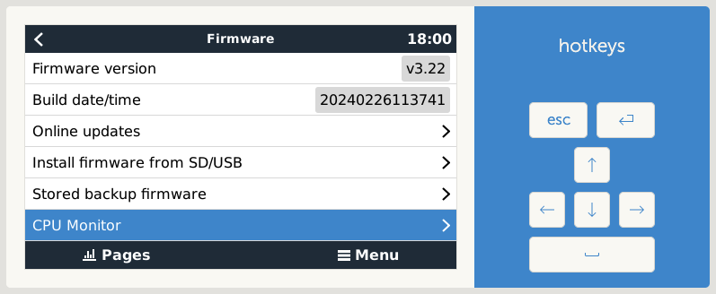

Welcome to dbus-cpu !¶
{kind=link}
The basic idea is that dbus-cpu will show some CPU stats on the GUI. This is a driver for Venus OS devices (any GX device sold by Victron or a Raspberry Pi running the Venus OS image).
Warning
Expert functionality! You should be sure about what you are doing. I do not take any responsibility for any damage or loss of data.
Content index¶
Known limitations¶
The driver ist tested on a Venus GX (FW 3.x). It will not run on Venus OS version lower to 3.0 and does not support beta versions with the new UI from 3.20 on.
Reporting issues¶
To improve quality and usability any feedback is highly welcome! To maintain a good transparency and professional work for my, please respect the following recommendations how to feed back.
Note
Please report issues / bugs here:
https://github.com/mworion/dbus-cpu/issues.
And if you have feature requests discussions or for all other topics of interest there is a good place to start here:
In case of a bug report please have a good description (maybe a screenshot if it‘s related to GUI) and add the log file(s). Normally you just could drop the log file (or PNG in case of a screen shot) directly to the webpage issues on GitHub. In some cases GitHub does not accept the file format. In this case, please zip them and drop the zipped file. This will work. If you have multiple files, please don‘t zip them to one file! I need them separated and zipped causes more work.
If changes are made due to a feedback, new releases will have a link to the closed issues on GitHub.